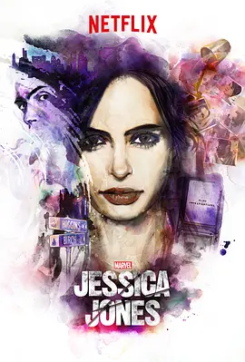

7.5
杰西卡·琼斯 第一季
Jessica Jones Season 1
2015
美国
评分 7.5
导演:
大卫·彼特拉克 / S·J·克拉克森
演员:
克里斯滕·里特 / 瑞切尔·泰勒 / 麦克·柯尔特 / 大卫·田纳特 / 凯瑞-安·莫斯
类型:
剧情,动作,犯罪
剧情简介
在纽约阴冷的街巷里，杰西卡·琼斯像幽灵一样穿行。她挂着“别惹我”的表情，在破旧公寓里经营着名为“别名调查”的小事务所，接的多是婚外情、失踪人这种看似琐碎却充满阴暗面的活儿。她喝酒压住头痛，用毒舌和冷漠挡住所有靠近的人，仿佛只要把自己藏在霓虹和夜色后面，过去就追不上来。然而，噩梦从未真正离开。那个曾用心灵控制摧毁她意志的男人，在城市的角落悄然再现，留下的每一桩案子都像是对她的挑衅。杰西卡在调查一名年轻女孩的遭遇时，逐渐意识到这不是普通的委托，而是她与旧日恶魔的再次正面碰撞。她一边追查线索，一边小心地掩饰恐惧，因为只要听见他的声音，只要闻到那股熟悉的紫罗兰香水味，她就可能再次被拉回那个失去自我的深渊。身边的人逐渐被卷入这场看不见的战争。挚友特瑞什表面是光鲜亮丽的电台主持人，背后却倔强地想把杰西卡从自毁边缘拉回来；有着刀枪不入之身的卢克·凯奇与她互相吸引，却都小心地隐藏伤疤；律所合伙人霍加斯精明冷酷，却在权力与道德之间反复摇摆。每个人都在利用、倚靠或帮助她，而她则在保护与疏离之间来回试探，唯恐自己再一次害死身边的人。随着受害者名单不断增加，杰西卡不得不承认，单靠逃避和自嘲，已经无法让她与过去划清界线。她开始主动追踪对方的每一步行动，设局、反监视、利用街头线人，甚至不惜把自己放在诱饵的位置，只为找到那个“扭断锁链”的机会。她的超能力并不体面：破门、掰弯铁栏、拳头落下会让人飞出数米，但真正让她难以承受的，是自己曾在控制之下做过什么。这是一段关乎创伤、生存与自我认同的黑色都市故事。杰西卡既不是传统意义上的英雄，也远谈不上拯救世界，她只是一个被逼到角落里、仍旧咬牙回击的普通人。她每一次选择站出来，都不是因为高尚信念，而是因为如果连她自己都不再相信“可以反抗”，这座城市就再也不会有人记得那个早已被抹去名字的受害者。